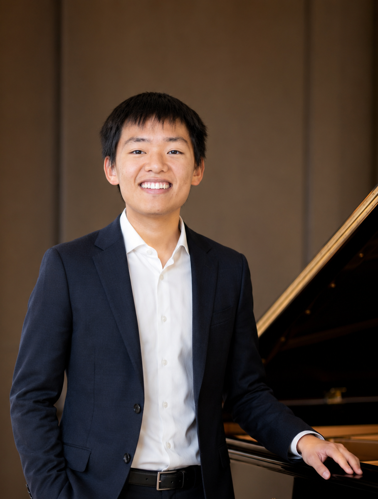

About Eu-Rway Chew
Eu-Rway Chew is an award-winning pianist trained at the Victoria Conservatory of Music, where he studied for over a decade under Ingrid Henderson. In 2021, at age 15, he won first place in the Developing Artist category (age 18 & under) at the National Canada Music Festival and was named “best pianist under 18 in Canada”.
His playing has taken him from solo recitals to performing a Mozart piano concerto with a full chamber orchestra, alongside numerous VCM scholarships along the way. He also performed at an inauguration party for BC Lieutenant Governor Janet Austin, and is a regular presence in the Victoria community, performing benefit concerts for the Alzheimer's Society and Christ Church Cathedral's St. Cecilia Day series, as well as performances supporting local hospitals, senior homes, and schools.
Eu-Rway Chew now brings that same training and stage experience to private events, weddings, corporate functions, and private parties, with a repertoire spanning classical, pop, jazz, and film music. He also takes requests and is happy to curate something specific to whatever you have in mind.
If you ever need a pianist for a wedding, event, or anything in between, feel free to reach out. He'd love to hear about it.
“As you know, playing the piano requires discipline, focus, and artistry. Your embodiment of these qualities and passion for classical music is truly remarkable.”
— Justin Trudeau, 23rd Prime Minister of Canada; Letter to Eu-Rway after winning First Place at National Canada Music Festival
What I Play
Classical
Chopin, Debussy, Beethoven, and other standards, arranged to suit a quiet ceremony or a grand entrance alike.
Pop Covers
Contemporary favorites reimagined for solo piano — familiar songs that bring guests of every generation onto the same page.
Film & Movie Scores
Sweeping, cinematic pieces that add atmosphere to a room without a single word needing to be said.